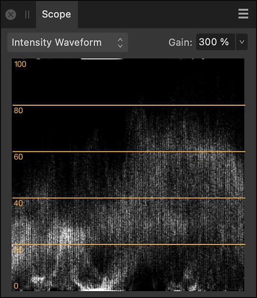
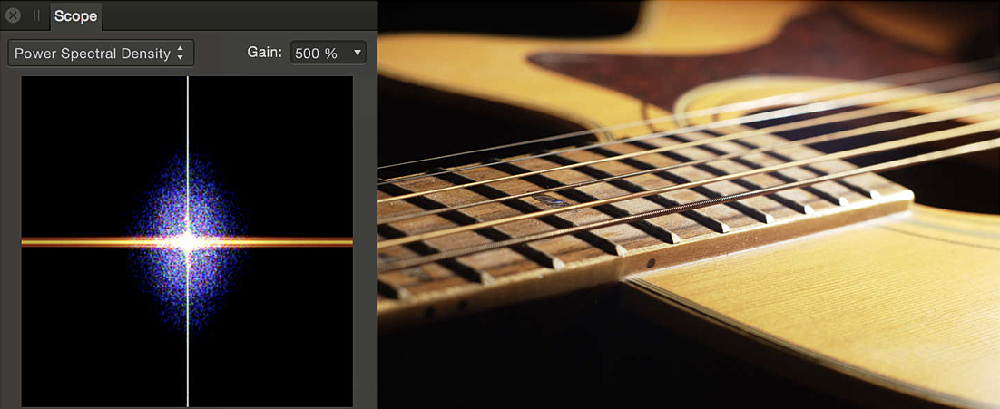

The Scope panel provides a variety of charts which allow you to examine the distribution of luminance and chrominance in an image, allowing you to judge whether tonal or color correction is needed. It can be used as an alternative to, or in combination with, the Histogram panel.
The charts available on the Scope panel allow you to analyze an image in order to identify areas which need correcting. Some of these issues may be subtle to the eye but may dramatically improve a photo once corrected. Example issues which may be identified using the Scope panel include tonal problems or color casts.
The Scope panel is available from the Photo and Develop Personas; for the former, it can be switched on via the Window menu; for the latter, it can be expanded into view by clicking 'Scope' at the top right of your workspace.


The following settings are available in the panel: